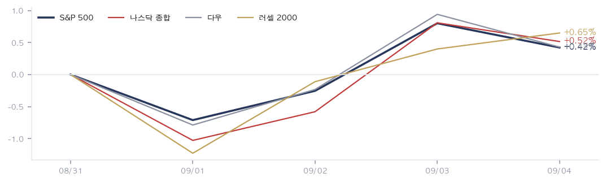
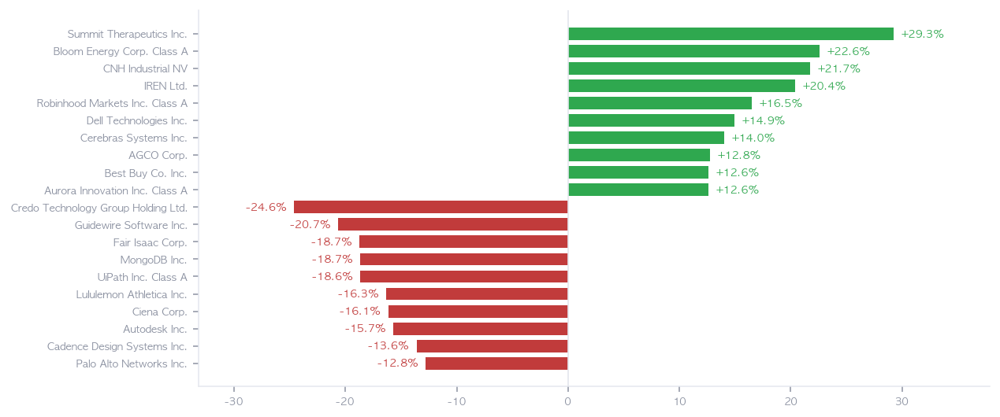
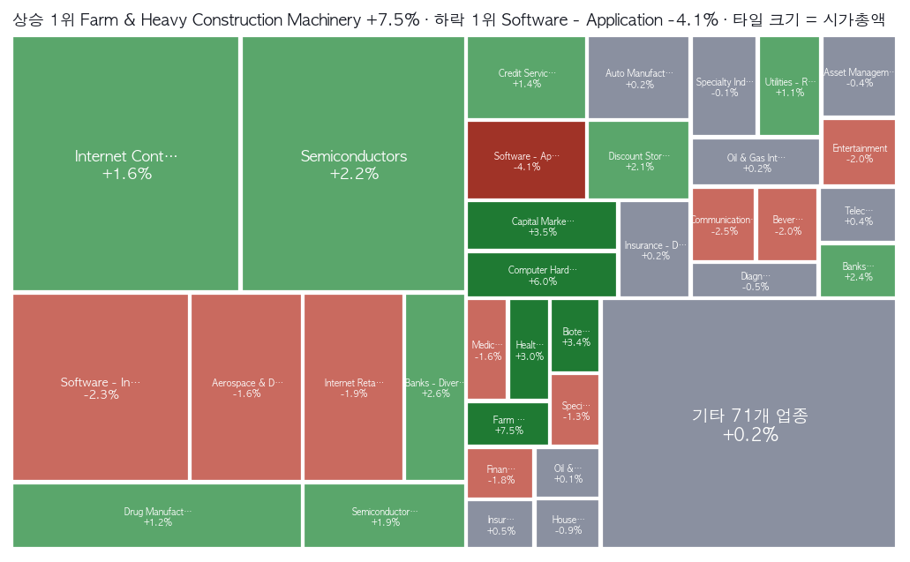
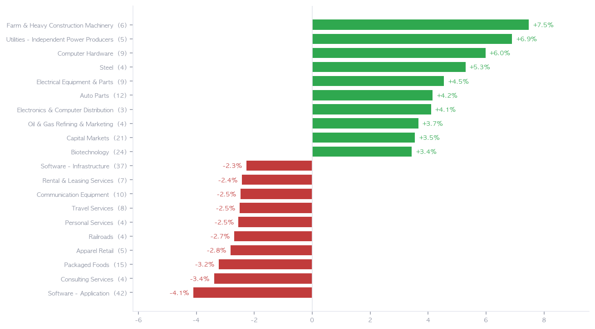
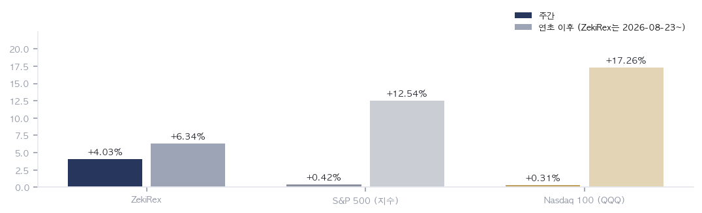

|
ZekiRex™ Apex US 주간 총결산 8/31~9/4
한 주가 남긴 것 · 1/2
데이터 기준 9/4 종가 |
ZekiRex™ |
|
|
한 주를 한 문장으로. 지수만 보면 아무 일도 없었던 한 주입니다. S&P 500이 5거래일 동안 0.42% 올랐고 러셀 2000은 0.65%에 그쳤습니다. 그런데 업종을 갈라 보면 응용 소프트웨어가 4.10% 내렸고 농기계·중장비는 7.47% 올랐습니다. 9/4 뉴욕 장이 열리기 전에 나온 8월 고용지표가 인하 기대를 인상 베팅으로 되돌렸습니다. 같은 주에 이란 제재가 넓어지면서 WTI는 배럴당 91.5달러까지 올랐습니다. 돈값과 연료값이 함께 오르면 먼 미래의 이익으로 값을 매기는 쪽이 먼저 눌립니다. 지수가 제자리였던 것은 시장이 조용했기 때문이 아닙니다. 오른 쪽과 내린 쪽이 서로를 지웠기 때문입니다. |
| 이번 주 반드시 알아야 할 5가지 |
한 주에 일어난 일 가운데 돈에 영향을 준 것만 다섯입니다. 각 항목은 사실, 왜 그런가, 그래서 무엇인가 순입니다. | 1 | 8월 고용 16만2000명 — 인하 기대가 뒤집힌 자리 사실 8월 비농업 취업자가 16만2000명 늘어 다우존스 조사 예상치를 세 배 넘게 웃돌았습니다. 실업률은 4.1%로 유지됐고, 7월 수치도 4만4000명 상향돼 감소가 증가로 뒤집혔습니다. (로이터·CNBC) 왜 고용이 식지 않았다는 숫자는 인하의 근거를 지웁니다. 미 10년물은 한 주를 4.78%로 닫았습니다. 월스트리트저널과 배런스는 같은 지표가 인상 베팅을 자극했다고 봤습니다. 하루 전만 해도 서울의 머리기사는 월러 이사의 동결 시사였습니다. 행동 — 먼 미래의 이익으로 값이 매겨지는 성장주일수록 할인율에 민감합니다. 그런 종목을 들고 계시다면 9/11 소비자물가지수 전에 비중을 늘리는 것은 지표 하나에 거는 일이 됩니다. 반대로 이미 값이 깎인 종목은 그 지표가 식은 숫자를 내놓을 때 가장 크게 되돌아옵니다. | | 2 | 백악관은 인하를 요구하고, 채권시장은 반대를 값에 넣었습니다 사실 트럼프 대통령이 연준의 인하를 요구하며 주요 교역 상대국과의 무역 중단 위협을 되풀이했습니다. (CNBC·사우스차이나모닝포스트·스트레이츠타임스) 왜 같은 주에 시장은 정반대를 값에 넣었습니다. 정치의 요구와 채권 가격이 갈라지면 그 벌어진 폭 자체가 변동성이 됩니다. 파이낸셜타임스는 국채 매도세가 신용이 약한 미국 차입자부터 압박하고 있다고 봤습니다. 행동 — 금리에 기대는 자산 — 리츠, 고배당주, 신용등급이 낮은 회사채 — 은 발언이 아니라 실제 발행 금리를 보고 움직입니다. 확인 지점은 하나입니다. 위협이 실제 관세나 수입 제한으로 바뀌는지, 아니면 말로 끝나는지입니다. | | 3 | 이란 압박이 넓어지며 WTI 배럴당 91.5달러 사실 미 재무부가 이란군 자금을 옮겼다는 이유로 튀르키예 은행을 제재했습니다. WTI는 한 주 6.67% 올랐고, 연초 이후로는 59.60% 올랐습니다. (CNBC·세마포) 왜 이번 상승은 수요가 아니라 공급을 막아서 나왔습니다. 유가는 물가 지표에 두어 달 뒤에 나타나므로 9/11 숫자에는 아직 다 담기지 않습니다. 그런데도 인하를 늦출 이유로는 이미 쓰이고 있습니다. 행동 — 정유·에너지를 들고 계시다면 이 구분이 전부입니다. 공급이 막혀 오른 값은 제재가 풀리면 같은 속도로 되돌아갑니다. 저희 기준을 넘은 62종목 가운데 열둘이 석유·가스이고 반도체는 둘뿐이라는 점도 같은 방향을 가리킵니다. | | 4 | 소프트웨어가 105개 업종 가운데 꼴찌였습니다 사실 응용 소프트웨어가 한 주 4.10% 내려 꼴찌였습니다. 크레도 테크놀로지가 24.59%, 가이드와이어 소프트웨어가 20.67%, 몽고DB가 18.67% 내렸습니다. 왜 금리가 오른 주에 소프트웨어가 눌리는 것은 익숙한 그림입니다. 다만 이번에는 시가총액이 훨씬 큰 인프라 소프트웨어까지 2.27% 내렸습니다. 개별 실적이 아니라 값을 매기는 방식이 바뀌었다는 뜻입니다. 같은 주에 엔비디아는 허깅페이스 인수 계약을 맺었습니다. 공시가 적은 주주 지급액은 약 119억달러입니다. 행동 — 소프트웨어를 들고 계시다면 다음 몇 주 동안 볼 것은 실적이 아니라 금리입니다. 인공지능에 들어가는 돈이 소프트웨어 매출로 넘어오는지는 9/10 오라클 실적이 답합니다. 그 전까지 이 업종의 값은 대체로 채권시장이 정합니다. | | 5 | 룰루레몬이 하루 20% 빠졌습니다 — 소비의 균열 사실 룰루레몬이 분기 실적과 연간 전망을 함께 낮추며 9/4 하루에 20% 급락했습니다. 주간으로는 16.34% 하락입니다. 몇 달 만에 두 번째 매출 전망 하향입니다. (CNBC·글로브앤메일) 왜 의류 소매 업종은 한 주 2.82% 내렸습니다. 고용은 버티는데 소비 기업의 전망은 낮아지는 조합이 나왔습니다. 임금이 모자라서가 아니라 값을 올리지 못해서 생기는 문제를 가리킵니다. 행동 — 소비재를 들고 계시다면 매출 성장률보다 마진 전망을 먼저 보십시오. 고용이 버티는 한 금리는 쉽게 내려오지 않습니다. 그 사이에 값을 올리지 못하는 회사가 먼저 드러납니다. 이번 실적 시즌의 하향은 대부분 마진 쪽에서 나왔습니다. |
|
| 한 주 총결산 |
| 지표 | 금요일 종가 | 주간 | 연초 이후 | | S&P 500 | 7,719 | +0.42% | +12.54% | | 나스닥 종합 | 26,507 | +0.52% | +14.08% | | 다우 | 53,414 | +0.43% | +10.40% | | 러셀 2000 | 2,976 | +0.65% | +18.64% | | 비트코인 | $79,675 | +1.42% | -10.21% | | 달러인덱스 | 99.2 | -0.27% | +0.75% | | 미 국채 10년 | 4.78% | +0.03%p | +0.60%p | | WTI 원유 | $91.5 | +6.67% | +59.60% | | 금 | $4,430 | -0.03% | +2.67% |
표의 주간 등락은 8/31 뉴욕 종가에서 9/4 뉴욕 종가까지 5거래일입니다. 연초 이후 열은 같은 종가 시리즈로 1월 첫 거래일부터 잰 값입니다. 표에서 나오는 것은 하나입니다. 네 지수가 전부 0.4~0.7% 사이에 몰려 있는데 전체 종목의 주간 평균은 0.13%에 그쳤습니다. 지수를 올린 것은 시가총액이 큰 소수라는 뜻입니다. 그래서 이번 주는 지수보다 그 아래 업종 표를 보셔야 합니다. |
| 한 주 움직인 것 |
주간 전체를 거래한 1,033종목 기준 · 따라가는 종목 1,039개 그 주 오른 종목 | SMMT SMMT | +29.26% | | BE BE | +22.57% | | CNH CNH | +21.72% | | IREN IREN | +20.38% | | HOOD HOOD | +16.51% | | DELL DELL | +14.94% | | CBRS CBRS | +14.01% | | AGCO AGCO | +12.75% | | BBY BBY | +12.63% | | AUR AUR | +12.61% |
| 그 주 내린 종목 | CRDO CRDO | -24.59% | | GWRE GWRE | -20.67% | | FICO FICO | -18.74% | | MDB MDB | -18.67% | | PATH PATH | -18.64% | | LULU LULU | -16.34% | | CIEN CIEN | -16.14% | | ADSK ADSK | -15.72% | | CDNS CDNS | -13.60% | | PANW PANW | -12.79% |
|
상하위는 8/31~9/4 뉴욕 종가 기준이며, 닷새를 다 거래한 1,033종목만 넣었습니다. 이번 주의 분단선은 성장과 가치가 아니라 물성입니다. 오른 쪽은 발전·기계·철강·서버처럼 전기를 쓰고 물건을 만드는 회사이고, 내린 쪽은 크레도·가이드와이어·파이코·몽고DB처럼 미래 이익으로 값이 매겨지는 회사입니다. 델은 오른 쪽 열에 있고 저희 보유 종목입니다. 그 사실이 이 목록을 더 옳게 만들지는 않습니다. |
| 보유 종목의 한 주 |
| 종목 | 금요일 종가 | 주간 | 평가손익 | 손절가 | 손절 여유폭 | 일정 | | ASML ASML | $1,714.88 | +1.11% | -2.77% | $1,622.66 | +5.7% | 10/14 실적 | | MPC MPC | $388.90 | +0.49% | +1.54% | $352.36 | +10.4% | 11/3 실적 | | MU MU | $1,016.59 | +6.04% | +5.15% | $889.44 | +14.3% | 9/30 실적 | | DELL DELL | $524.14 | +14.94% | +18.56% | $406.71 | +28.9% | 11/27 실적 |
보유는 넷입니다. ASML(반도체 장비), 마이크론(MU, 메모리), 델 테크놀로지스(DELL, 서버·하드웨어), 마라톤 페트롤리엄(MPC, 정유)입니다. 주간 성적은 4.03%로, 같은 기간 S&P 500이 오른 폭의 아홉 배가 넘습니다. 그 차이의 대부분은 델 한 종목에서 나왔습니다. 넷이 함께 이긴 이유는 넷 다 같은 이야기에 걸려 있기 때문입니다. 금리와 유가가 오르는 쪽입니다. 그래서 반대 방향의 주에는 넷이 함께 집니다. 손절선까지 거리가 가장 좁은 것은 ASML의 5.68%입니다. 이번 주에 청산도 하나 있었습니다. 얼라이언트(ALNT)가 9/1 뉴욕 종가에서 손절선에 걸려 나갔습니다. 매수가 95.84달러 대비 9.8% 손실로 확정됐습니다. 규칙이 정한 선은 매수가 대비 −8%이지만 신호를 종가로 확인하므로 실제 청산가는 그 아래일 수 있습니다. 그 종목은 이후 되올라 금요일을 94.62달러로 닫았습니다. 이번에는 손절 규칙이 손해를 봤다는 뜻이고, 그대로 알려 드립니다. 운용 개시 이후 청산은 이 한 건이며 성공은 없습니다. 현금은 사실상 남아 있지 않습니다. |
|
|
다음 주를 위한 것 · 2/2
데이터 기준 9/4 종가 |
ZekiRex™ |
|
|
| 그 밖에 알아야 할 것 |
| 노르웨이 국부펀드의 미 국채 축소 제안 · 노르웨이 정부연기금 운용사가 미 국채 보유를 크게 줄이는 방안을 제안했고, 포춘은 그 규모를 800억달러로 적었습니다. 승인 시점은 정해지지 않았습니다. (CNBC · Globe and Mail · Fortune) → 장기물 수요가 줄면 미국의 조달 금리 바닥이 올라가고, 이번 주 소프트웨어를 누른 힘이 한 겹 더 붙습니다. | | 일본은행 인상 관측과 엔화 급등 · 일본은행이 정책을 조일 것이라는 관측에 엔화가 9/3 급등했습니다. 회의 결과는 아직 나오지 않았습니다. (The Guardian · Nikkei Asia) → 엔 강세는 세계 위험자산에서 자금을 거둬들이는 경로입니다. 미국 성장주에는 국내 금리와 별개로 붙는 두 번째 부담입니다. | | 폭스바겐 감원 10만 명으로 확대 · 폭스바겐 이사회가 감원 규모를 10만 명으로 두 배 늘리기로 승인했습니다. 실행 기간은 수년이고 완료 시점은 정해지지 않았습니다. (WSJ US Business · Daily Maverick) → 유럽 제조업 수요의 크기를 다시 보게 하는 숫자이고, 이번 주 오른 기계·부품 업종의 수요가 미국 쪽에 치우쳐 있다는 뜻이기도 합니다. | | 한국 누적 수출 7094억달러 · 9월 초까지 한국 누적 수출이 7094억달러로 지난해 연간 실적을 넘어섰고, 연간 1조달러 전망이 나왔습니다. 연간 확정은 연말입니다. (Yonhap KR · Chosun Ilbo · Money Today) → 미국 투자자에게는 세계 제조 수요를 재는 자입니다. 반도체와 기계가 오른 이번 주 흐름과 같은 방향을 가리킵니다. | | 이번 주에 읽은 매체는 28곳이고, 서로 다른 발행사는 26곳입니다. 한 곳만 근거인 항목은 그 매체 이름을 그대로 적었습니다. |
|
한국과 미국을 잇는 것: 뉴욕에서 서울로 가는 길은 이번 주에도 금리 하나였습니다. 기울기를 만든 것은 9/4 뉴욕이고, 서울은 그보다 앞서 한 주를 닫았습니다. 9/7 미국이 노동절로 쉬므로 서울이 월요일에 그 숫자를 반영해도 받아 줄 뉴욕 정규장이 없습니다. 반영과 확인 사이가 하루 더 벌어집니다. |
 다섯 선은 8/31 뉴욕 종가를 100으로 놓은 네 지수와 비트코인의 경로입니다. 종가 두 점만 보면 조용한 한 주이지만, 경로는 화요일까지 밀렸다가 목·금에 되찾은 모양입니다. 고용지표가 나온 9/4에도 그 힘이 꺾이지 않았습니다. 따라서 다음 굴곡은 9/10 오라클 실적이고, 그때까지 기울기는 금리가 정합니다. |
 막대는 닷새를 다 거래한 1,033종목의 주간 등락 상하위 열 개씩이고, 전체 평균은 0.13%였습니다. 위쪽은 서밋 테라퓨틱스·블룸 에너지·CNH 인더스트리얼처럼 물건과 전기를 파는 회사이고, 아래쪽은 소프트웨어가 줄지어 있습니다. 그래서 지수가 아니라 업종을 고른 한 주였습니다. 델의 14.94%가 이 목록 여섯 번째입니다. |
 타일 크기는 업종의 시가총액이고, 짙은 초록이 상승, 짙은 붉음이 하락입니다. 수익률 1위는 농기계·중장비의 7.47%이지만 그 타일은 작습니다. 지도의 무게는 큰 칸에서 움직였습니다. 반도체가 오르고 인프라 소프트웨어가 내린 것이 그것입니다. 전체 평균보다 진한 칸만 평균 위라는 뜻입니다. 다음 후보는 뜨거운 칸에서 나오므로 거기부터 봐야 합니다. |
 막대는 105개 업종 가운데 상하위 열 개이고, 업종 등락은 소속 종목 수익률의 단순평균입니다. 위쪽 다섯은 농기계·독립발전·컴퓨터 하드웨어·철강·전기장비로 전부 전기를 쓰거나 설비를 파는 쪽입니다. 아래쪽은 응용 소프트웨어가 꼴찌였습니다. 컴퓨터 하드웨어의 5.98%는 히트맵에서도 큰 칸이므로, 순위와 지도가 같은 업종을 가리킬 때를 먼저 봐야 합니다. |
 쌍막대의 왼쪽은 8/31~9/4 주간, 오른쪽 옅은 막대는 연초 이후입니다. 연초 이후는 S&P 500 12.54%, 나스닥100이 QQQ ETF 기준 17.26%입니다. ZekiRex 막대만 계좌가 시작한 8/23 이후 전체라 나란히 읽을 값이 아닙니다. 같은 기간끼리는 8/24 이후 계좌 6.34%, 지수 0.86%, QQQ 1.79%입니다. |
| 다음 주 반드시 알아야 할 5가지 |
이번 주 시사점에서 이어지는 다섯입니다. 무엇을 보면 되는지까지 적었습니다. | 1 | 9/11 8월 소비자물가지수 — 이번 주 기울기의 검증 사실 8월 소비자물가지수가 9/11 08:30 ET(한국시간 21:30)에 나옵니다. 9/15~16 회의 전 마지막 물가 지표입니다. 왜 고용지표가 만든 인상 쪽 기울기를 이 숫자가 확인하거나 되돌립니다. 유가 상승분은 아직 다 담기지 않았으므로, 이번 숫자가 식게 나와도 다음 달 숫자에는 남아 있습니다. 행동 — 성장주와 소프트웨어를 들고 계시다면 이 하루가 다음 몇 주의 할인율을 정합니다. 발표 전에 비중을 크게 바꾸는 것은 지표 하나에 거는 일이고, 발표 뒤에 움직이면 가격은 이미 달라져 있습니다. 그 둘 사이에서 어느 쪽 위험을 감당할지가 실제 결정입니다. | | 2 | 9/10 오라클 실적 — 인공지능 돈이 소프트웨어 매출로 오는가 사실 오라클 1분기 실적이 9/10 17:00 ET(한국시간 9/11 06:00)에 나옵니다. 왜 이번 주 소프트웨어 하락은 실적이 아니라 할인율 때문이었습니다. 오라클은 그 구분을 시험합니다. 클라우드 매출이 인공지능 설비 투자를 따라 늘고 있다면 소프트웨어의 하락은 금리 문제일 뿐입니다. 행동 — 소프트웨어를 들고 계시다면 매출 총액보다 클라우드 부문의 증가율과 남은 계약 잔고를 보십시오. 두 숫자가 꺾이면 이번 주 하락은 금리가 아니라 수요 문제였다는 뜻이 됩니다. 그때는 업종 전체를 다시 봐야 합니다. | | 3 | 9/7 노동절 휴장 — 확인이 하루 밀립니다 사실 9/7 월요일 미국 정규장이 노동절로 쉽니다. 한 주의 첫 거래일은 9/8 화요일입니다. 왜 고용지표가 만든 기울기를 확인할 정규장이 하루 늦게 열립니다. 그 사이 아시아와 유럽은 먼저 값을 매기므로, 화요일 뉴욕 개장가에는 사흘치가 한꺼번에 담깁니다. 행동 — 휴일을 앞두고 주말에 걸친 위험을 그대로 들고 가는지가 이번만은 이틀이 아니라 사흘짜리 결정입니다. 지정학 뉴스에 민감한 종목, 특히 유가에 연동된 종목은 그 사흘 동안 값을 매길 시장이 없습니다. | | 4 | 유가가 물가로 넘어오는 시차 사실 WTI는 연초 이후 배럴당 91.5달러까지 올라왔고, 이번 주 상승은 이란 제재 확대에서 나왔습니다. 왜 정제 제품 가격은 원유를 두어 달 뒤에 따라갑니다. 그래서 이번 상승은 9/11 지표보다 10월과 11월 지표에 더 크게 나타납니다. 인하 시점을 미루는 힘이 한 번이 아니라 두 번 온다는 뜻입니다. 행동 — 정유주를 들고 계시다면 정제마진이 넓어지는 구간이지만, 그 마진은 공급 차단이 유지되는 동안만 유지됩니다. 항공·운송·화학처럼 연료를 사는 쪽은 반대로 4분기 비용 전망을 다시 계산해야 합니다. | | 5 | 앤트로픽 상장 준비 — 성장주 자금의 다음 행선지 사실 앤트로픽이 2조달러 규모로 거론되는 상장의 주관 역할을 모건스탠리와 골드만삭스에 맡기는 단계라고 파이낸셜타임스가 전했습니다. 시점은 10월 중순으로 옮겨갔고 확정 일정은 없습니다. 왜 이 규모의 신규 상장은 기존 성장주에서 자금을 끌어옵니다. 소프트웨어가 이미 값이 깎인 상태에서 그런 흡인이 겹치면 회복이 늦어집니다. 행동 — 성장주 비중이 큰 계좌라면 10월 일정이 잡히는 시점 자체가 확인 지점입니다. 상장 자체보다 그 앞뒤 몇 주의 자금 이동이 값에 먼저 나타납니다. 지금 단계에서 확정된 것은 주관사 선정뿐이고 일정은 아직 확정되지 않았습니다. |
|
| 다음 주 핵심 |
| 9/7 (월) | 미국 노동절 휴장 정규장이 하루 없어 한 주의 첫 확인 지점이 9/8 화요일로 밀립니다. | | 9/10 (목) | 오라클 1분기 실적 17:00 ET(한국시간 9/11 06:00). 인공지능 투자가 소프트웨어 매출로 넘어오는지 보는 다음 확인 지점입니다. | | 9/11 (금) | 미국 8월 소비자물가지수 08:30 ET(한국시간 21:30). 9/15~16 회의 전 마지막 물가 지표입니다. |
|
다음 주는 이번 주가 세운 기울기를 데이터가 검증하는 주입니다. 9/11 물가 지표가 인상 쪽 기울기를 확인하거나 되돌립니다. 그 이틀 전 오라클 실적은 소프트웨어 하락의 원인을 금리와 수요 가운데 하나로 좁혀 줍니다. 9/7 휴장 때문에 두 확인이 사흘 안에 몰립니다. 저희 운용 규칙은 그대로입니다. 발표 전 추가 매수는 없고, 청산은 손절선과 추세 신호에서만 나옵니다. |
| 출처: 야후 파이낸스, 16:00 ET · 미 노동부 노동통계국 · 미 증권거래위원회 공시 · 로이터·CNBC·월스트리트저널·배런스·블룸버그·파이낸셜타임스·세마포·글로브앤메일 · 등급·순위·업종 집계·판정은 전부 ZekiRex 자체 산출입니다 |
|
본 리포트는 정보 제공 목적이며 투자 자문이 아닙니다. ZekiRex™ Apex US는 $10,000,000 규모의 시뮬레이션 포트폴리오를 규칙 기반으로 운용하며, 실제 계좌·주문과 무관합니다. 투자에는 손실 위험이 따릅니다. |
| This is the Rex Way, ZekiRex™ |